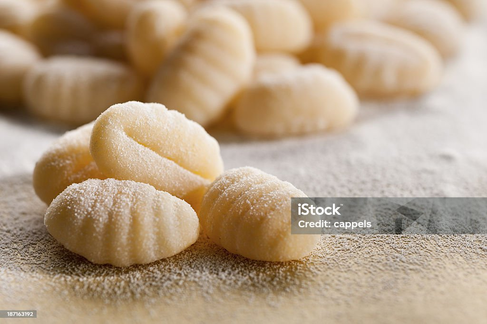

Gnocchi

Description
Gnocchi is simple to make with just three ingredients: mashed potato, flour, and egg. This recipe is one my
family has used for generations.
This gnocchi is "so tender and pillowy," says Allrecipes recipe tester Nicole Hopper. "Store-bought gnocchi can't
even compare."
Ingredients
Steps
- Boil and drain the potatoes, then mash or pass through a ricer.
- Combine the ingredients, then knead into a ball.
- Divide the dough into four even portions and shape into "snakes."
- Cut the snakes into pieces.
- Boil and drain the gnocchi.
Back